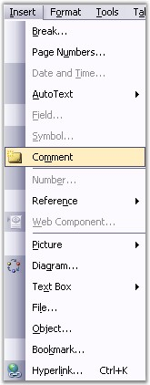
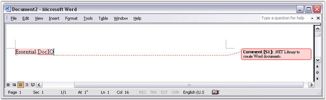

You can add comments to a Word document. To add a comment to a document, select the text to which you want to apply the comment, open the Insert menu and click Comment.

Figure 63: Comment option in Insert Menu

Figure 64: Comment inserted into a Word Document
DocIO has the ability to preserve Word comments, but the creation of comments from APIs or its modification is limited.
Comment is one of the subdocuments of Word. Presentation of this subdocument in the Word document consists of two parts – special marker, which defines the comment location in the document, and special data, which defines the text and formatting of the comment.
WComment class models the structure and properties of the comments. The following are the main properties of the WComment class.
· TextBody: contains text of the comment
· Format: specifies the format for the comment
TextBody property returns the object of the WTextBody type. Format returns the object of the WCommentFormat type.
Class Hierarchy
ParagraphItem
|
WComment
Public Constructor
|
Name |
Description |
|
WComment |
Initializes a new instance of the WComment class. |
Public Properties
|
Name |
Description |
|
EntityType |
Gets the type of the entity. |
|
Format |
Gets the format. |
|
TextBody |
Gets comment body. |
WCommentFormat has the following public properties and methods.
Public Methods
|
Name |
Description |
|
Clone
|
Creates a new object that is a copy of the current instance. |
|
WCommentFormat |
Initializes a new instance of the WCommentFormat class. |
|
RemoveCommentedItems |
To remove all the items from the comments. |
|
ReplaceCommentedItems |
Replace the commented document content. |
Public Properties
|
Name |
Description |
|
User |
Gets or sets the user. |
|
UserInitials |
Gets or sets the user initials. |
The following example illustrates how to search for a comment in the last section of a document. When it is found, the text and format of the comment is changed.
|
[C#]
WSection section = sourceDoc.LastSection; foreach (IWParagraph para in section.Paragraphs) { foreach (ParagraphItem item in para.Items) { if (item is WComment) { WComment comment = item as WComment; comment.TextBody.LastParagraph.Text = "NewText"; comment.Format.User = "TestUser"; } } } |
|
[VB.NET]
Dim section As WSection = sourceDoc.LastSection For Each para As IWParagraph In section.Paragraphs For Each item As ParagraphItem In para.Items If TypeOf item Is WComment Then Dim comment As WComment = CType(IIf(TypeOf item Is WComment, item, Nothing), WComment) comment.TextBody.LastParagraph.Text = "NewText" comment.Format.User = "TestUser" End If Next item Next para |
Comments Collection
You can access comments while browsing through the collection of paragraph items or through the collection of comments by using the WordDocument.GetComments method.
Public Methods
|
Name |
Description |
|
Clear |
Remove all comments from the document. |
|
RemoveAt |
Remove second comments from the document. |
The following example illustrates how to get all the comments from the document and remove them.
|
[C#]
WordDocument doc = new WordDocument("sample.doc"); commentsCollection comments = doc.GetComments();
// Remove second comments from the document. comments.RemoveAt(1);
// Remove all comments from the document. comments.Clear(); |
|
[VB]
Dim doc As New WordDocument("sample.doc") Dim comments As CommentsCollection = doc.GetComments()
' Remove second comments from the document. comments.RemoveAt(1)
' Remove all comments from the document. comments.Clear() |